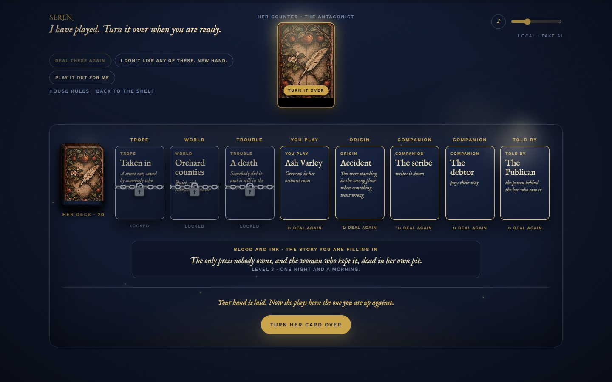

Same campaign. Never the same story.
You choose what you hope for. The teller deals the rest, writes your book, and you walk in. Blood and Ink, a level 3 murder at a wake, is on the table now.
The same murder, dealt three times.
Blood and Ink always opens on a death at the wake, in the orchard counties. Everyone else is dealt: who you are, why you came, who walks in beside you, who wants you gone, and who tells it. Then you play, and what you do is written down and stays done.
You pick what you hope for. The teller decides. You walk in.
Locked cards are the story you chose. The rest come in a hand you pick from. Her card she plays face down: keep it, or make her play another.
Your picks don't have to fit. You get what you asked for, made to work, and you find out how when you open the book.
The story you chose.
A hand of three.

Shut until the story opens it.

And then she hands you the book.
Who you are, your people, how the place works, who's who, and tonight. Everything in this book is true; the rest of the valley is there to find. Download it, then sit down at the table. On the laptop a stand-in writes it from your cards.



One hand. Three settings. Three different stories.
Five dials, and none of them picks a card. They tell the teller how to write what you were dealt: how absurd, how big the stakes, how dangerous, people or places, and how long the clocks run. Kit Marrow's hand from table one, written three times by the real teller: a reckoning at one long table, an inquest on a press-house stair, forty mourners at a will-reading.
The Tithe Hall Cup
Wenna Tregarth's cheek rests on the reckoning ledger, and perry runs down the page and blurs the Penrose column. Registrar Fenmore has not stood up. He is turning his own full cup a quarter-turn on its saucer and saying, to nobody in particular, that the counting room will be sealed within the hour. Across the table Dunstan Hollin already has his hand on the physician's shoulder. Kit's coat is heavy on one side: the daybook, still there. Beside her, Tamsin Rook's pen keeps moving. [Archivist's note: the tray Kit carried had four cups. See fact 1. The scribe recorded their order. See companions.]
Its fronts: The Probate Office · The Hollin cousins · The Ashcombe orchard families
The Press-Stair Inquest
Lamplight swings over Aldous Pell, folded wrong at the foot of the press-stair, his weighmaster's chain under one cheek. Maud Quarrender holds the lamp steady and does not look down at him. She looks up the stair at Kit in the counting-room door, and at the page in Kit's hand. Behind them the yard gate bangs open. A Hundred Court clerk comes through with a stick of red sealing wax already warming over his candle, calling for whoever keeps the books.
Its fronts: The Quarrender house · The Hundred Court · The Pell kin
The Wrenfield Ledger
The press-house smells of crushed pears and candle smoke. Forty Wrenfields and Holts stand shoulder to shoulder between the cider vats, and Ferrin Ashby's pen is already scratching. At the head table, Registrar Fenwright breaks the seal on Agathe's will, reads one line, and sets it down. "Before we proceed," she says, not looking up, "is there a Miss Kit Marrow present? Your name appears in my file." Behind Kit, Hesper Wrenfield presses a warm cup of perry into her hand and squeezes her fingers kindly.
Its fronts: The Probate Office of Coldbrook · The Wrenfield heirs · The Holt orchard families
Bring your characters. Seren moulds them to your story.
The build stays in D&D Beyond. Seren steps it to the campaign's level, one level at a time, up or down, and the teller ties it to the people in the story the way it ties a dealt character today.
Going down is a choice, not a subtraction: spells and items get chosen again.
Oriel Thane
The campaign has its villain. The world has others.
Side quests, DM mischief and villain moves the campaign never wrote, on clocks that run whether or not you act. About thirty of each ship in 1.5, scored from 97 side quests and 118 DM tricks.
The Director is code. It picks with seeded dice; the narrator tells it without knowing why. Never within seven turns of the last surprise, and only if it adds to what's happening.
Everything is a file you can read.
A campaign is a folder. The book is markdown. Every roll and ruling is a line in an append-only log, and a fix is a new line, never an edit.
Facts are marked true, known, suspected or false, so your character can be wrong and the game knows it. What she is hiding stays hidden until the story opens it; then it's yours too.
{"id": "f001", "fact": "Agnes was buried owing nobody", "visibility": "false", …}{"id": "f002", "fact": "The scribe keeps the yard's talk", "visibility": "known", …}{"id": "f003", "fact": "The clerk keeps a second ledger", "visibility": "suspected", …}{"id": "f004", "fact": held until the story opens it, "visibility": "true", …}
The storyteller never marks her own homework.
Reads the book before you do.
Code, not a model. Every front has a clock, no secret starts known, no borrowed setting, nobody called Seren. It sends the draft back once, then refuses it.
BuiltAsks one question.
Before the Director fires. It can only say no.
Decided for 1.5Rolled before she's told why.
The server rolls and writes it down first. A roll can be interpreted. It cannot be reversed.
Built on the web tableWhat it's built on.
- Python 3.11
- one engine for web, MCP and Claude Code
- state changes only through code
- SQLite for accounts
- Amazon Bedrock
- Nova at the table today
- Claude Sonnet and Opus by tier coming
- bring your own Anthropic key
- MCP server, official Python SDK
- MCP Apps
- three tools, read-only split from write
- the table as an app coming
- the Doorkeeper
- the fog gate
- server dice
- append-only ledger
- the Director, seeded coming
- AWS EC2 Graviton
- Amazon Linux 2023
- nginx
- Let's Encrypt
- systemd
- no SSH, only SSM
- Parameter Store for secrets
- SES for mail
- S3
- Google sign-in
- Cloudflare tunnel for MCP testing
- SRD 5.2, CC BY 4.0
- fronts from Dungeon World, CC BY 3.0
- clocks from Blades in the Dark, CC BY 3.0
- a Claude Code skill for local play

Write the campaign once. Every player gets their own.
Lock the spine.
Per slot, choose locked, dealt or sealed. Lock what makes it your story; seal the killer.
In the formatWrite the decks.
Three or four origins, your own cast as companions, the voices it suits, two or three antagonists.
In the formatIts own card backs.


A deck that looks like your story.
Three madeSet the dials' range.
Grim to wry, not grim to a sheep with opinions. Players tune inside your range.
BuiltAllow and block lists.
Which tropes and mischief can ever reach your table, from a shared library of thousands.
Decided, not builtThe truths stay yours.
What each card really means lives in a file the browser never gets. Only the teller reads it.
In the formatBlood and Ink is on the table.
One night and a morning. A wake tonight, a burial at noon, and somebody at the wake who would rather you went home.